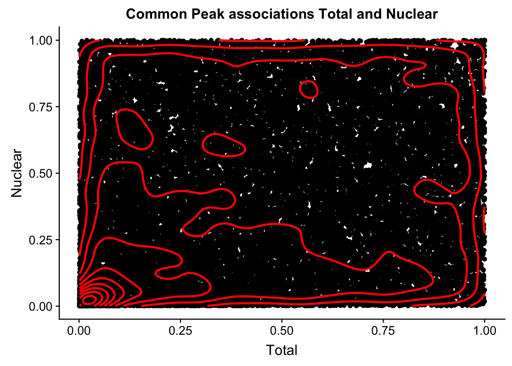

Last updated: 2019-03-12
Checks: 6 0
Knit directory: threeprimeseq/analysis/
This reproducible R Markdown analysis was created with workflowr (version 1.2.0). The Report tab describes the reproducibility checks that were applied when the results were created. The Past versions tab lists the development history.
Great! Since the R Markdown file has been committed to the Git repository, you know the exact version of the code that produced these results.
Great job! The global environment was empty. Objects defined in the global environment can affect the analysis in your R Markdown file in unknown ways. For reproduciblity it’s best to always run the code in an empty environment.
The command set.seed(12345) was run prior to running the code in the R Markdown file. Setting a seed ensures that any results that rely on randomness, e.g. subsampling or permutations, are reproducible.
Great job! Recording the operating system, R version, and package versions is critical for reproducibility.
Nice! There were no cached chunks for this analysis, so you can be confident that you successfully produced the results during this run.
Great! You are using Git for version control. Tracking code development and connecting the code version to the results is critical for reproducibility. The version displayed above was the version of the Git repository at the time these results were generated.
Note that you need to be careful to ensure that all relevant files for the analysis have been committed to Git prior to generating the results (you can use wflow_publish or wflow_git_commit). workflowr only checks the R Markdown file, but you know if there are other scripts or data files that it depends on. Below is the status of the Git repository when the results were generated:
Ignored files:
Ignored: .DS_Store
Ignored: .Rhistory
Ignored: .Rproj.user/
Ignored: data/.DS_Store
Ignored: data/perm_QTL_trans_noMP_5percov/
Ignored: output/.DS_Store
Untracked files:
Untracked: KalistoAbundance18486.txt
Untracked: analysis/4suDataIGV.Rmd
Untracked: analysis/DirectionapaQTL.Rmd
Untracked: analysis/EmpDistforOverlaps.Rmd
Untracked: analysis/EvaleQTLs.Rmd
Untracked: analysis/YL_QTL_test.Rmd
Untracked: analysis/groSeqAnalysis.Rmd
Untracked: analysis/ncbiRefSeq_sm.sort.mRNA.bed
Untracked: analysis/snake.config.notes.Rmd
Untracked: analysis/verifyBAM.Rmd
Untracked: analysis/verifybam_dubs.Rmd
Untracked: code/PeaksToCoverPerReads.py
Untracked: code/strober_pc_pve_heatmap_func.R
Untracked: data/18486.genecov.txt
Untracked: data/APApeaksYL.total.inbrain.bed
Untracked: data/AllPeak_counts/
Untracked: data/ApaQTLs/
Untracked: data/ApaQTLs_otherPhen/
Untracked: data/ChromHmmOverlap/
Untracked: data/DistTXN2Peak_genelocAnno/
Untracked: data/FeatureoverlapPeaks/
Untracked: data/GM12878.chromHMM.bed
Untracked: data/GM12878.chromHMM.txt
Untracked: data/GWAS_overlap/
Untracked: data/LianoglouLCL/
Untracked: data/LocusZoom/
Untracked: data/LocusZoom_Unexp/
Untracked: data/LocusZoom_proc/
Untracked: data/MatchedSnps/
Untracked: data/NucSpecQTL/
Untracked: data/NuclearApaQTLs.txt
Untracked: data/PeakCounts/
Untracked: data/PeakCounts_noMP_5perc/
Untracked: data/PeakCounts_noMP_genelocanno/
Untracked: data/PeakUsage/
Untracked: data/PeakUsage_noMP/
Untracked: data/PeakUsage_noMP_GeneLocAnno/
Untracked: data/PeaksUsed/
Untracked: data/PeaksUsed_noMP_5percCov/
Untracked: data/PolyA_DB/
Untracked: data/QTL_overlap/
Untracked: data/RNAkalisto/
Untracked: data/RefSeq_annotations/
Untracked: data/Replicates_usage/
Untracked: data/Signal_Loc/
Untracked: data/TotalApaQTLs.txt
Untracked: data/Totalpeaks_filtered_clean.bed
Untracked: data/UnderstandPeaksQC/
Untracked: data/WASP_STAT/
Untracked: data/YL-SP-18486-T-combined-genecov.txt
Untracked: data/YL-SP-18486-T_S9_R1_001-genecov.txt
Untracked: data/YL_QTL_test/
Untracked: data/apaExamp/
Untracked: data/apaExamp_proc/
Untracked: data/apaQTL_examp_noMP/
Untracked: data/bedgraph_peaks/
Untracked: data/bin200.5.T.nuccov.bed
Untracked: data/bin200.Anuccov.bed
Untracked: data/bin200.nuccov.bed
Untracked: data/clean_peaks/
Untracked: data/comb_map_stats.csv
Untracked: data/comb_map_stats.xlsx
Untracked: data/comb_map_stats_39ind.csv
Untracked: data/combined_reads_mapped_three_prime_seq.csv
Untracked: data/diff_iso_GeneLocAnno/
Untracked: data/diff_iso_proc/
Untracked: data/diff_iso_trans/
Untracked: data/eQTLs_Lietal/
Untracked: data/ensemble_to_genename.txt
Untracked: data/example_gene_peakQuant/
Untracked: data/explainProtVar/
Untracked: data/filtPeakOppstrand_cov_noMP_GeneLocAnno_5perc/
Untracked: data/filtered_APApeaks_merged_allchrom_refseqTrans.closest2End.bed
Untracked: data/filtered_APApeaks_merged_allchrom_refseqTrans.closest2End.noties.bed
Untracked: data/first50lines_closest.txt
Untracked: data/gencov.test.csv
Untracked: data/gencov.test.txt
Untracked: data/gencov_zero.test.csv
Untracked: data/gencov_zero.test.txt
Untracked: data/gene_cov/
Untracked: data/joined
Untracked: data/leafcutter/
Untracked: data/merged_combined_YL-SP-threeprimeseq.bg
Untracked: data/molPheno_noMP/
Untracked: data/mol_overlap/
Untracked: data/mol_pheno/
Untracked: data/nom_QTL/
Untracked: data/nom_QTL_opp/
Untracked: data/nom_QTL_trans/
Untracked: data/nuc6up/
Untracked: data/nuc_10up/
Untracked: data/other_qtls/
Untracked: data/pQTL_otherphen/
Untracked: data/pacbio_cov/
Untracked: data/peakPerRefSeqGene/
Untracked: data/peaks4DT/
Untracked: data/perm_QTL/
Untracked: data/perm_QTL_GeneLocAnno_noMP_5percov/
Untracked: data/perm_QTL_GeneLocAnno_noMP_5percov_3UTR/
Untracked: data/perm_QTL_diffWindow/
Untracked: data/perm_QTL_opp/
Untracked: data/perm_QTL_trans/
Untracked: data/perm_QTL_trans_filt/
Untracked: data/protAndAPAAndExplmRes.Rda
Untracked: data/protAndAPAlmRes.Rda
Untracked: data/protAndExpressionlmRes.Rda
Untracked: data/reads_mapped_three_prime_seq.csv
Untracked: data/smash.cov.results.bed
Untracked: data/smash.cov.results.csv
Untracked: data/smash.cov.results.txt
Untracked: data/smash_testregion/
Untracked: data/ssFC200.cov.bed
Untracked: data/temp.file1
Untracked: data/temp.file2
Untracked: data/temp.gencov.test.txt
Untracked: data/temp.gencov_zero.test.txt
Untracked: data/threePrimeSeqMetaData.csv
Untracked: data/threePrimeSeqMetaData55Ind.txt
Untracked: data/threePrimeSeqMetaData55Ind.xlsx
Untracked: data/threePrimeSeqMetaData55Ind_noDup.txt
Untracked: data/threePrimeSeqMetaData55Ind_noDup.xlsx
Untracked: data/threePrimeSeqMetaData55Ind_noDup_WASPMAP.txt
Untracked: data/threePrimeSeqMetaData55Ind_noDup_WASPMAP.xlsx
Untracked: output/LZ/
Untracked: output/deeptools_plots/
Untracked: output/picard/
Untracked: output/plots/
Untracked: output/qual.fig2.pdf
Unstaged changes:
Modified: analysis/28ind.peak.explore.Rmd
Modified: analysis/CompareLianoglouData.Rmd
Modified: analysis/NewPeakPostMP.Rmd
Modified: analysis/PeakToXper.Rmd
Modified: analysis/apaQTLoverlapGWAS.Rmd
Modified: analysis/characterize_apaQTLs.Rmd
Modified: analysis/cleanupdtseq.internalpriming.Rmd
Modified: analysis/coloc_apaQTLs_protQTLs.Rmd
Modified: analysis/dif.iso.usage.leafcutter.Rmd
Modified: analysis/diff_iso_pipeline.Rmd
Modified: analysis/explainpQTLs.Rmd
Modified: analysis/explore.filters.Rmd
Modified: analysis/fixBWChromNames.Rmd
Modified: analysis/flash2mash.Rmd
Modified: analysis/initialPacBioQuant.Rmd
Modified: analysis/mispriming_approach.Rmd
Modified: analysis/overlapMolQTL.Rmd
Modified: analysis/overlapMolQTL.opposite.Rmd
Modified: analysis/overlap_qtls.Rmd
Modified: analysis/peakOverlap_oppstrand.Rmd
Modified: analysis/peakQCPPlots.Rmd
Modified: analysis/pheno.leaf.comb.Rmd
Modified: analysis/pipeline_55Ind.Rmd
Modified: analysis/swarmPlots_QTLs.Rmd
Modified: analysis/test.max2.Rmd
Modified: analysis/test.smash.Rmd
Modified: analysis/understandPeaks.Rmd
Modified: analysis/unexplainedeQTL_analysis.Rmd
Modified: code/Snakefile
Note that any generated files, e.g. HTML, png, CSS, etc., are not included in this status report because it is ok for generated content to have uncommitted changes.
These are the previous versions of the R Markdown and HTML files. If you’ve configured a remote Git repository (see ?wflow_git_remote), click on the hyperlinks in the table below to view them.
| File | Version | Author | Date | Message |
|---|---|---|---|---|
| html | 0537a72 | Briana Mittleman | 2019-03-11 | Build site. |
| Rmd | 88e8b7d | Briana Mittleman | 2019-03-11 | try with permuted values |
Look for the snps that are QTLs in the nuclear fraction but not the total fraction. To do this I want to plot the association in the total fraction vs. the association in the nuclear fraction. I can look for snps that fall off the 1:1 line towards the nuclear fraction.
I need to look for the snps tested in both fractions. The nominal results are in:
This will not include the 18982867 more assocaitions in nucelar. I can only look at those that are tested in both analyses.
Format of file: * peakID * snp * dist * pval * slope (effect size)
I can make a dictionary with gene:snp:peak as the keys and a dictionary for the values- the inner dictionary will have the fraction as the key and the pvalue as the value
totalandnuclear_commonassociation.py
totRes=open("/project2/gilad/briana/threeprimeseq/data/nominal_APAqtl_GeneLocAnno_noMP_5percUs/filtered_APApeaks_merged_allchrom_refseqGenes.GeneLocAnno_NoMP_sm_quant.Total.fixed.pheno_5perc.fc.gz.qqnorm_allNomRes.txt","r")
nucRes=open("/project2/gilad/briana/threeprimeseq/data/nominal_APAqtl_GeneLocAnno_noMP_5percUs/filtered_APApeaks_merged_allchrom_refseqGenes.GeneLocAnno_NoMP_sm_quant.Nuclear.fixed.pheno_5perc.fc.gz.qqnorm_allNomRes.txt", "r")
outfile=open("/project2/gilad/briana/threeprimeseq/data/NucSpecQTL/TotNucRes_overlapassociations.txt", "w")
resDict={}
for ln in totRes:
gene=ln.split()[0].split(":")[-1].split("_")[0]
peak=ln.split()[0].split(":")[-1].split("_")[-1]
snp=ln.split()[1]
id=gene + ":" + peak + ":" + snp
pval=ln.split()[3]
resDict[id]={}
resDict[id]["Total"]=pval
for ln in nucRes:
gene=ln.split()[0].split(":")[-1].split("_")[0]
peak=ln.split()[0].split(":")[-1].split("_")[-1]
snp=ln.split()[1]
id=gene + ":" + peak + ":" + snp
pval=ln.split()[3]
if id in resDict.keys():
resDict[id]["Nuclear"]=pval
else:
continue
#now i have a double dictionary. i need to write it out. i want id, the total pval, then the nuc pval
for outer, inner in resDict.items():
id=outer
outPval=[]
for key in inner:
outPval.append(inner[key])
print(outPval)
if(len(outPval))==2:
outfile.write("%s\t%s\t%s\n"%(id, outPval[0], outPval[1]))
outfile.close()
run it: run_totalandnuclear_commonassociation.sh
#!/bin/bash
#SBATCH --job-name=run_totalandnuclear_commonassociation
#SBATCH --account=pi-yangili1
#SBATCH --time=5:00:00
#SBATCH --output=run_totalandnuclear_commonassociation.out
#SBATCH --error=run_totalandnuclear_commonassociation.err
#SBATCH --partition=bigmem2
#SBATCH --mem=100G
#SBATCH --mail-type=END
module load Anaconda3
source activate three-prime-env
python totalandnuclear_commonassociation.py
Tot assoc: 105456802 nuclear assoc: 124439669 common: 94176434 This means 41 percent are common. This means in the make phenotpye step, different genes and peaks are removed. Results: /project2/gilad/briana/threeprimeseq/data/NucSpecQTL/TotNucRes_overlapassociations.txt
makeTotalNucAssocPlot.R
library(tidyverse)
library(data.table)
file=fread("../data/NucSpecQTL/TotNucRes_overlapassociations.txt", col.names =c("ID","Total", "Nuclear"))
cor_plot=ggplot(file, aes(x=-log10(Total), y=-log10(Nuclear))) + geom_point() + geom_density2d(na.rm = TRUE, size = 1, colour = 'red') + labs(title="Common Peak/Snp/ID associations Total and Nuclear", x="-log10(Total Pval)", y="-log10(Nuclear Pval)") + geom_smooth(aes(x=-log10(Total),y=-log10(Nuclear)),method = "lm")
#print(summary(lm(data=file, -log10(Total) ~ -log10(Nuclear))))
#cor_plot
#ggsave(plot, "/project2/gilad/briana/threeprimeseq/output/TotalvNucPavalCommonAssoc.png") in python with pyplotlib:
import matplotlib.pyplot as plt
import numpy as np
inF=open("/project2/gilad/briana/threeprimeseq/data/NucSpecQTL/TotNucRes_overlapassociations.txt", "r")
total=[]
nuclear=[]
for ln in inF:
loca, tot, nuc = ln.split()
total.append(float(tot))
nuclear.append(float(nuc))
np.asarray(total)
np.asarray(nuclear)
diff =np.subtract(total, nuclear)
plt.plot(total,nuclear)
plt.savefig("/project2/gilad/briana/threeprimeseq/output/TotalvNucPavalCommonAssoc.png")run_makeTotalNucAssocPlot.sh
#!/bin/bash
#SBATCH --job-name=run_makeTotalNucAssocPlot
#SBATCH --account=pi-yangili1
#SBATCH --time=5:00:00
#SBATCH --output=run_makeTotalNucAssocPlot.out
#SBATCH --error=run_makeTotalNucAssocPlot.err
#SBATCH --partition=bigmem2
#SBATCH --mem=100G
#SBATCH --mail-type=END
module load Anaconda3
source activate three-prime-env
Rscript makeTotalNucAssocPlot.RThese are too many values: I need to use the permuted. this will jsut be the pvalue for the same peak:gene combo
totalandnuclear_commonassociationPerm.py
totRes=open("/project2/gilad/briana/threeprimeseq/data/perm_APAqtl_GeneLocAnno_noMP_5percUs/filtered_APApeaks_merged_allchrom_refseqGenes.GeneLocAnno.NoMP_sm_quant.Total.fixed.pheno_5perc_permRes.txt","r")
nucRes=open("/project2/gilad/briana/threeprimeseq/data/perm_APAqtl_GeneLocAnno_noMP_5percUs/filtered_APApeaks_merged_allchrom_refseqGenes.GeneLocAnno.NoMP_sm_quant.Nuclear.fixed.pheno_5perc_permRes.txt", "r")
outfile=open("/project2/gilad/briana/threeprimeseq/data/NucSpecQTL/TotNucRes_Permoverlapassociations.txt", "w")
resDict={}
for ln in totRes:
gene=ln.split()[0].split(":")[-1].split("_")[0]
peak=ln.split()[0].split(":")[-1].split("_")[-1]
id=gene + ":" + peak
pval=ln.split()[-2]
resDict[id]={}
resDict[id]["Total"]=pval
for ln in nucRes:
gene=ln.split()[0].split(":")[-1].split("_")[0]
peak=ln.split()[0].split(":")[-1].split("_")[-1]
id=gene + ":" + peak
pval=ln.split()[-2]
if id in resDict.keys():
resDict[id]["Nuclear"]=pval
else:
continue
#now i have a double dictionary. i need to write it out. i want id, the total pval, then the nuc pval
for outer, inner in resDict.items():
id=outer
outPval=[]
for key in inner:
outPval.append(inner[key])
print(outPval)
if(len(outPval))==2:
outfile.write("%s\t%s\t%s\n"%(id, outPval[0], outPval[1]))
outfile.close()
library(tidyverse)── Attaching packages ───────────────────────────────────────────────────────────────────────────────────── tidyverse 1.2.1 ──✔ ggplot2 3.1.0 ✔ purrr 0.3.1
✔ tibble 2.0.1 ✔ dplyr 0.8.0.1
✔ tidyr 0.8.3 ✔ stringr 1.4.0
✔ readr 1.3.1 ✔ forcats 0.4.0 Warning: package 'tibble' was built under R version 3.5.2Warning: package 'tidyr' was built under R version 3.5.2Warning: package 'purrr' was built under R version 3.5.2Warning: package 'dplyr' was built under R version 3.5.2Warning: package 'stringr' was built under R version 3.5.2Warning: package 'forcats' was built under R version 3.5.2── Conflicts ──────────────────────────────────────────────────────────────────────────────────────── tidyverse_conflicts() ──
✖ dplyr::filter() masks stats::filter()
✖ dplyr::lag() masks stats::lag()library(data.table)Warning: package 'data.table' was built under R version 3.5.2
Attaching package: 'data.table'The following objects are masked from 'package:dplyr':
between, first, lastThe following object is masked from 'package:purrr':
transposelibrary(cowplot)Warning: package 'cowplot' was built under R version 3.5.2
Attaching package: 'cowplot'The following object is masked from 'package:ggplot2':
ggsavefile=fread("../data/NucSpecQTL/TotNucRes_Permoverlapassociations.txt", col.names =c("ID","Total", "Nuclear"))
cor_plot=ggplot(file, aes(x=Total, y=Nuclear)) + geom_point() + geom_density2d(na.rm = TRUE, size = 1, colour = 'red') + labs(title="Common Peak associations Total and Nuclear")
cor_plotWarning: Removed 20 rows containing missing values (geom_point).
| Version | Author | Date |
|---|---|---|
| 0537a72 | Briana Mittleman | 2019-03-11 |
This is similar to what was happening in the nominal case.
I think I need to plot just the total in nuclaer and nuclear in total. this way i can see the outliers.
names=c("SNP", "peak", "pval")
NucQTLinTot=read.table("../data/QTL_overlap/NucQTLs_inTotFractionRes.txt", stringsAsFactors = F, col.names = names)
TotQTLinNuc=read.table("../data/QTL_overlap/TotQTLs_inNucFractionRes.txt", stringsAsFactors = F, col.names = names)
QTL_names= c("pid", "nvar", "shape1", "shape2", "dummy", "SNP", "dist", "npval", "slope", "ppval", "bpval", "bh")
NucQTL=read.table("../data/ApaQTLs/NuclearapaQTLs.GeneLocAnno.noMP.5perc.10FDR.txt", col.names = QTL_names, stringsAsFactors = F) %>% separate(pid, into=c("chr", "start","end", "peakID"), sep=":") %>% separate(peakID, into=c("gene", "strand", "peak"), sep="_") %>% select(SNP, peak, ppval)
TotQTL=read.table("../data/ApaQTLs/TotalapaQTLs.GeneLocAnno.noMP.5perc.10FDR.txt", col.names = QTL_names, stringsAsFactors = F) %>% separate(pid, into=c("chr", "start","end", "peakID"), sep=":") %>% separate(peakID, into=c("gene", "strand", "peak"), sep="_") %>% select(SNP, peak, ppval)Join these:
TotQTL_bothfrac= TotQTL %>% inner_join(TotQTLinNuc, by=c("SNP", "peak"))
colnames(TotQTL_bothfrac)= c("SNP", "peak", "Total", "Nuclear")NucQTL_bothfrac= NucQTL %>% inner_join(NucQTLinTot, by=c("SNP", "peak"))
colnames(NucQTL_bothfrac)= c("SNP", "peak", "Nuclear", "Total")All qtls together:
allQTL=TotQTL_bothfrac %>% bind_rows(NucQTL_bothfrac)ggplot(allQTL, aes(x=Nuclear, y=Total)) + geom_point()The pvalues are not consistent. I need to get the original pvalues from the nominal files.
nominal associations for each QTL:
getNominal4QTLs.py
nucQTLs="/project2/gilad/briana/threeprimeseq/data/ApaQTLs/Nuclear.apaQTLs.sort.bed"
totQTLs="/project2/gilad/briana/threeprimeseq/data/ApaQTLs/Total.apaQTLs.sort.bed"
nucNom="/project2/gilad/briana/threeprimeseq/data/nominal_APAqtl_GeneLocAnno_noMP_5percUs/filtered_APApeaks_merged_allchrom_refseqGenes.GeneLocAnno_NoMP_sm_quant.Nuclear.fixed.pheno_5perc.fc.gz.qqnorm_allNomRes.txt"
totNom="/project2/gilad/briana/threeprimeseq/data/nominal_APAqtl_GeneLocAnno_noMP_5percUs/filtered_APApeaks_merged_allchrom_refseqGenes.GeneLocAnno_NoMP_sm_quant.Total.fixed.pheno_5perc.fc.gz.qqnorm_allNomRes.txt"
outtot="/project2/gilad/briana/threeprimeseq/data/NucSpecQTL/TotQTLs_inTotFractionRes.txt"
outnuc="/project2/gilad/briana/threeprimeseq/data/NucSpecQTL/NucQTLs_inNucFractionRes.txt"
def sameFract(inRes, inQTL, out):
fout=open(out, "w")
qtl_dic={}
#SNP is key, peak is value
for ln in open(inQTL,"r"):
snp=ln.split()[2]
chrom=ln.split()[0]
peak=ln.split()[3].split(":")[0]
qtl=str(chrom) + ":" + str(snp)
if qtl not in qtl_dic.keys():
qtl_dic[qtl]=[peak]
else:
qtl_dic[qtl].append(peak)
#print(qtl_dic)
for ln in open(inRes, "r"):
pval=ln.split()[3]
snp=ln.split()[1]
peak=ln.split()[0].split(":")[3].split("_")[-1]
if snp in qtl_dic.keys():
if peak in qtl_dic[snp]:
fout.write("%s\t%s\t%s\n"%(snp, peak, pval))
fout.close()
sameFract(nucNom, nucQTLs,outnuc)
sameFract(totNom, totQTLs, outtot)
run_getNominal4QTLs.sh
#!/bin/bash
#SBATCH --job-name=run_getNominal4QTLs
#SBATCH --account=pi-yangili1
#SBATCH --time=5:00:00
#SBATCH --output=run_getNominal4QTLs.out
#SBATCH --error=run_getNominal4QTLs.err
#SBATCH --partition=bigmem2
#SBATCH --mem=100G
#SBATCH --mail-type=END
module load Anaconda3
source activate three-prime-env
python getNominal4QTLs.pyI now want to plot the total vs nuclear nominal pvalues for the nuclear QTLs.
colnames(NucQTLinTot)=c("SNP", "peak", "totalPval")
NucQTLinNuc=read.table("../data/NucSpecQTL/NucQTLs_inNucFractionRes.txt", col.names = c("SNP", "peak","nuclearPval"), stringsAsFactors = F)
NucQTL_all= NucQTLinTot %>% inner_join(NucQTLinNuc, by=c("SNP", "peak"))
summary(lm(data=NucQTL_all,-log10(totalPval) ~ -log10(nuclearPval)))
Call:
lm(formula = -log10(totalPval) ~ -log10(nuclearPval), data = NucQTL_all)
Residuals:
Min 1Q Median 3Q Max
-4.1638 -2.7988 -0.9846 1.5394 17.9462
Coefficients:
Estimate Std. Error t value Pr(>|t|)
(Intercept) 4.1767 0.1719 24.3 <2e-16 ***
---
Signif. codes: 0 '***' 0.001 '**' 0.01 '*' 0.05 '.' 0.1 ' ' 1
Residual standard error: 3.824 on 494 degrees of freedombothPval_nucqtl=ggplot(NucQTL_all, aes(x=-log10(totalPval), y=-log10(nuclearPval))) + geom_point() + geom_density2d(na.rm = TRUE, size = 1, colour = 'red') + geom_smooth(aes(x=-log10(totalPval),y=-log10(nuclearPval)),method = "lm") + labs(title="Nominal Pvalues for Nuclear APA qtls")
#+geom_text(aes(label=SNP),hjust=0, vjust=0)
bothPval_nucqtlggplot(NucQTL_all, aes(x=totalPval, y=nuclearPval)) + geom_point() + labs(title="Nominal Pval results for Nuclear QTLs") + geom_density2d(na.rm = TRUE, size = 1, colour = 'red') +geom_vline(xintercept=.05)nNucQTLNotSigTot= NucQTL_all %>% filter(totalPval>.05) %>% nrow()
nNucQTLNotSigTot[1] 118For Total QTLs:
colnames(TotQTLinNuc)=c("SNP", "peak", "nuclearPval")
TotQTLinTot=read.table("../data/NucSpecQTL/TotQTLs_inTotFractionRes.txt", col.names = c("SNP", "peak","totalPval"), stringsAsFactors = F)
TotQTL_all= TotQTLinNuc %>% inner_join(TotQTLinTot, by=c("SNP", "peak"))
summary(lm(data=NucQTL_all,-log10(nuclearPval) ~ -log10(totalPval)))
Call:
lm(formula = -log10(nuclearPval) ~ -log10(totalPval), data = NucQTL_all)
Residuals:
Min 1Q Median 3Q Max
-3.4270 -1.9985 -1.1978 0.9371 15.8122
Coefficients:
Estimate Std. Error t value Pr(>|t|)
(Intercept) 7.1208 0.1385 51.41 <2e-16 ***
---
Signif. codes: 0 '***' 0.001 '**' 0.01 '*' 0.05 '.' 0.1 ' ' 1
Residual standard error: 3.082 on 494 degrees of freedombothPval_totqtl=ggplot(TotQTL_all, aes(x=-log10(nuclearPval), y=-log10(totalPval))) + geom_point() + geom_density2d(na.rm = TRUE, size = 1, colour = 'red') + geom_smooth(aes(x=-log10(nuclearPval),y=-log10(totalPval)),method = "lm") + labs(title="Nominal Pvalues for Total APA qtls")
#+geom_text(aes(label=SNP),hjust=0, vjust=0)
bothPval_totqtlbothFracPlots=plot_grid(bothPval_nucqtl,bothPval_totqtl)
bothFracPlotsggsave(bothFracPlots, file="../output/plots/NominalPvalcondQTL.png", height=7, width=12 )ggplot(TotQTL_all, aes(x=nuclearPval, y=totalPval)) + geom_point() + labs(title="Nominal Pval results for Total QTLs") + geom_density2d(na.rm = TRUE, size = 1, colour = 'red') nTotQTLNotSigNuc= TotQTL_all %>% filter(nuclearPval>.05) %>% nrow()
nTotQTLNotSigNuc[1] 39Is the difference significant. More likely to have nuclear specific qlts?
phyper(118, 495, 272, 157, lower.tail = F)[1] 0.0005207115Plot for this:
compareSpecQTL=as.data.frame(cbind(fraction=c("Total QTL", "Total QTL","Nuclear QTL","Nuclear QTL"), SigInOther=c("No","Yes","No","Yes"),Value=c(.14,.86 ,.24,.76)))
compareSpecQTL$Value=as.numeric(as.character(compareSpecQTL$Value))qtls_oppfrac=ggplot(compareSpecQTL,aes(x=fraction, fill=SigInOther, y=Value)) + geom_bar(stat="identity") +scale_fill_manual(values=c("red","grey")) + labs(y="Proportion", title="QTLs by nominal significance in other fraction") + annotate("text", label="p < .0005", y=1.2, x=1.5) + geom_segment(aes(x=1.1, xend=1.9, y=1.1, yend=1.1))
qtls_oppfracggsave(qtls_oppfrac, file="../output/plots/QTLsSiginOppFraction.png")Saving 7 x 5 in image
sessionInfo()R version 3.5.1 (2018-07-02)
Platform: x86_64-apple-darwin15.6.0 (64-bit)
Running under: macOS 10.14.1
Matrix products: default
BLAS: /Library/Frameworks/R.framework/Versions/3.5/Resources/lib/libRblas.0.dylib
LAPACK: /Library/Frameworks/R.framework/Versions/3.5/Resources/lib/libRlapack.dylib
locale:
[1] en_US.UTF-8/en_US.UTF-8/en_US.UTF-8/C/en_US.UTF-8/en_US.UTF-8
attached base packages:
[1] stats graphics grDevices utils datasets methods base
other attached packages:
[1] cowplot_0.9.4 data.table_1.12.0 forcats_0.4.0
[4] stringr_1.4.0 dplyr_0.8.0.1 purrr_0.3.1
[7] readr_1.3.1 tidyr_0.8.3 tibble_2.0.1
[10] ggplot2_3.1.0 tidyverse_1.2.1
loaded via a namespace (and not attached):
[1] tidyselect_0.2.5 xfun_0.5 haven_2.1.0 lattice_0.20-38
[5] colorspace_1.4-0 generics_0.0.2 htmltools_0.3.6 yaml_2.2.0
[9] rlang_0.3.1 pillar_1.3.1 glue_1.3.0 withr_2.1.2
[13] modelr_0.1.4 readxl_1.3.0 plyr_1.8.4 munsell_0.5.0
[17] gtable_0.2.0 workflowr_1.2.0 cellranger_1.1.0 rvest_0.3.2
[21] evaluate_0.13 labeling_0.3 knitr_1.21 broom_0.5.1
[25] Rcpp_1.0.0 scales_1.0.0 backports_1.1.3 jsonlite_1.6
[29] fs_1.2.6 hms_0.4.2 digest_0.6.18 stringi_1.3.1
[33] grid_3.5.1 rprojroot_1.3-2 cli_1.0.1 tools_3.5.1
[37] magrittr_1.5 lazyeval_0.2.1 crayon_1.3.4 whisker_0.3-2
[41] pkgconfig_2.0.2 MASS_7.3-51.1 xml2_1.2.0 lubridate_1.7.4
[45] assertthat_0.2.0 rmarkdown_1.11 httr_1.4.0 rstudioapi_0.9.0
[49] R6_2.4.0 nlme_3.1-137 git2r_0.24.0 compiler_3.5.1